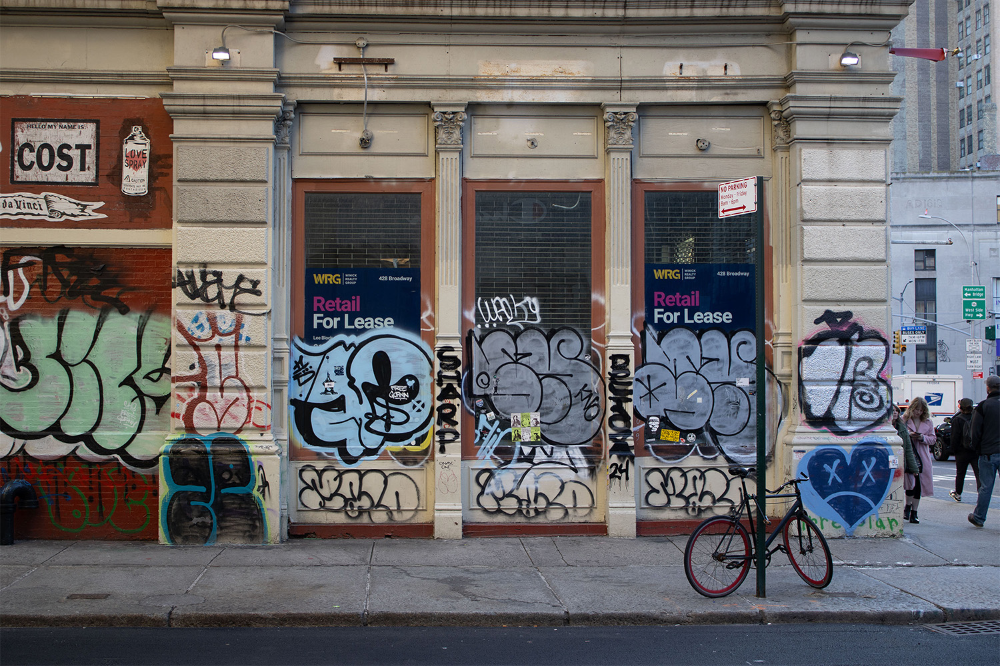
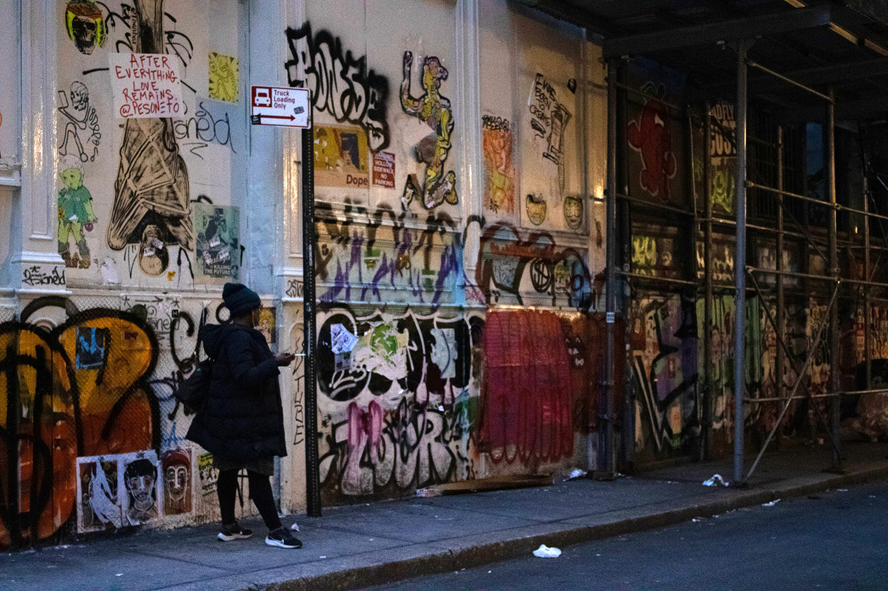
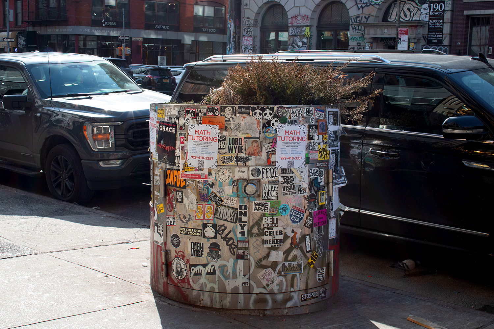

The Secrets of Graffiti Artists by Araceli

Another Storefront, March 13, 2024. Broome St, NYC
Many times they choose to target high-up and hard to reach spots in order to inspire awe. This begs the question, how do graffiti writers reach these areas? The answer is a combination of trespassing and climbing gear. They may choose to use harnesses, ropes, ladders, grappling hooks, and self-made impromptu scaffolds. A more risky task is buildering, which is when artists scale building exteriors in a manner similar to a rock-climber [8]. Safety isn’t all out the window though. In order to stay safe artists often work in groups, employing the buddy system in case something goes wrong. Other tactics include scouting locations in advance in order to prepare for the terrain and challenges they may encounter. While it may seem reckless, choosing such iconic and hard to reach places aids in the growth of their reputation and exemplifies their fearlessness[8].
 Storefront, March 13, 2024. China Town, NYC.
Storefront, March 13, 2024. China Town, NYC.
Rooftops and sides of buildings aren’t exclusively where graffiti writers chose to create. Freeman alley is a hidden gem located in Manhattan’s lower east side. Every inch of it is covered in graffiti. While exploring its walls I encountered two graffiti artists about to begin a project and they agreed to have a quick conversation with me about what they do. The woman I spoke with chose to remain anonymous.
 Women Enjoying Cigarette, March 13, 2024. Cortlandt Alley & White St, NYC.
Interview:
[Me]: How did you get into graffiti?
[Anonymous]: I feel like I got into graffiti cause I would see trains all the time. I'm from Michigan so there's like a lot of trains with graffiti and I thought it was cool and I didn’t know how to do it so I just kinda like tried to do it on my own and made a bunch of rookie mistakes until I met people who did it and they kinda helped me out.
[Me]: Yeah ‘cause i feel like it's a hard medium to get into ‘cause you have to like physically go out and do it
[Anonymous]: Yeah, take risks.
[Me]: Do you have any artists who do graffiti who you like or are a fan of?
[Anonymous]: I really like a guy named Pleth 1 he’s from mexico, I like boosted, a lot of like Mexican writers
[Me]: Are you Mexican?
[Anonymous]: Nah I'm Puerto Rican
[Me]: Ah okay I’m Mexican
[Anonymous]: I really like their style they have like a very cool style
[Me]: How would you describe it?
[Anonymous]: It’s called like malandro, its like this [point to wall] it's very square, instead of like wildstyle
[Me]: Okay that's valid, how would you describe your style?
[Anonymous]: My style?
[Me]: Yeah what do you gravitate to? What do you like?
[Anonymous]: I like malandro lettering or like calligraphy style, I like wild style too but i just really really gravitate more toward this style
[Me]: Have you ever run into trouble doing graffiti?
[anonymous]: Yeah.
~~
Malandro, the style she mentioned being inspired by, is a hard style to find information on in terms of history and origin. It is characterized by its geometric rigidness, reminiscent of old English lettering. Based on available information, it’s rooted in Latino culture [9]. Finding extensive information on certain graffiti styles proves difficult due to its guerilla nature. Some common terms that are important to be aware of while exploring this art form include [10]:
* Tagging: a signature of writer using usually one color, this is the most simple and straightforward form of graffiti
* Throw-ups: one level up from tagging that uses more colors
 Crossing Road, March 3, 2024. Broadway, NYC.
Crossing Road, March 3, 2024. Broadway, NYC.* Block-buster: a larger more involved artwork that may fill a large space such as a wall
* Wildstyle: one of the most visually appealing forms of graffiti, intricate in nature with complicated patterns, requires a lot of skill
* Heaven or Heaven Spot: a high up hard to reach place for a writer
* Stencil: made of any material that allows a cut-out to be made, writers spray paint over the stencil and create a pattern, good for mass volume
* Latrinalia: graffiti put in bathrooms
 Stickers, March 13, 2024. Allen st, NYC.
* Poster or paste up: also good for mass volume, features posters made at home (hand drawn or digitally) that can be quickly pasted up
* Scatchiti: graffiti made by scratching into a surface
* Piece: short for masterpiece, a large artwork put in a very public place that garners respect from both artists and the public alike [10]
Whether targeting high-up spots or street-level walls, graffiti writers employ a combination of creativity, risk-taking, and technical skill to make their mark on the urban landscape.
Sources:
- [1] Art, Trendy. “What’s the Difference Between Street Art and Graffiti ?” The Trendy Art, 30 June 2023
- [2] Decker, Scott H., and Glen D. Curry. “Graffiti Definition, History, and Facts.” Encyclopedia Britannica, 7 Mar. 2024
- [3] Ehrlich, Dimitri. “Summer Guide - a History of Graffiti in Its Own Words.” New York Magazine, 22 June 2006
- [4] Wikipedia contributors. “Graffiti in New York City.” Wikipedia, 13 Mar. 2024
- [5] Alioto, Daisy. “How Graffiti Became Gentrified.” The New Republic, 25 Mar. 2024
- [6] Campbell, Jon. “Graffiti as a Hate Crime Divides NY Gov. Hochul and Progressive Democrats.” Gothamist, 12 Feb. 2024
- [7] “Graffiti.” ASU Center for Problem-Oriented Policing, 16 Oct. 2022
- [8] Collins, Dave. “How Do Graffiti Artists Get Up There? Exploring Artists’ Techniques and Tools | Will Power.” Hip Hop Is My Religion, 9 Apr. 2023
- [9] Importer. “‘the Original Street Style – Lettering Malandro’ Exhibition Mexico City.” MOLOTOWTM Blog, 25 Feb. 2021
- [10] “Graffiti Styles: Top 10 Types of Graffiti Explained - Eden Gallery.” EDEN Gallery